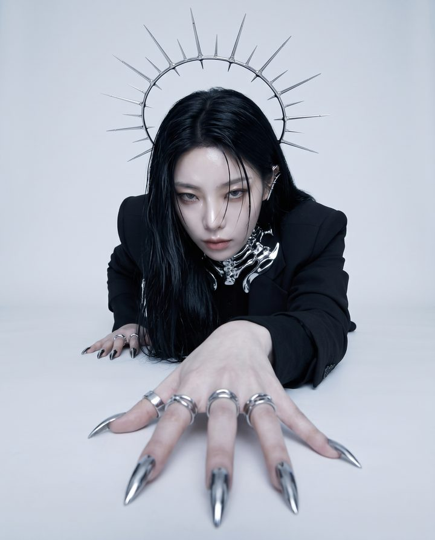
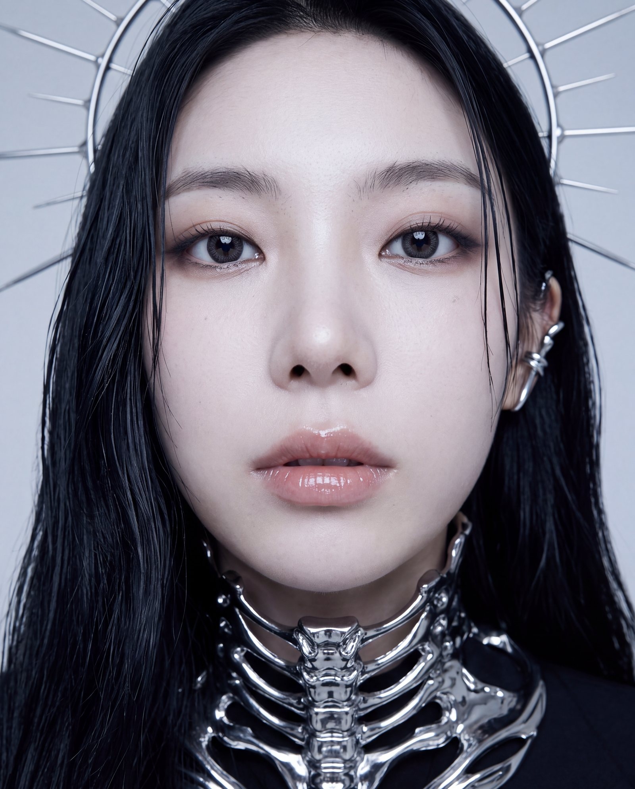
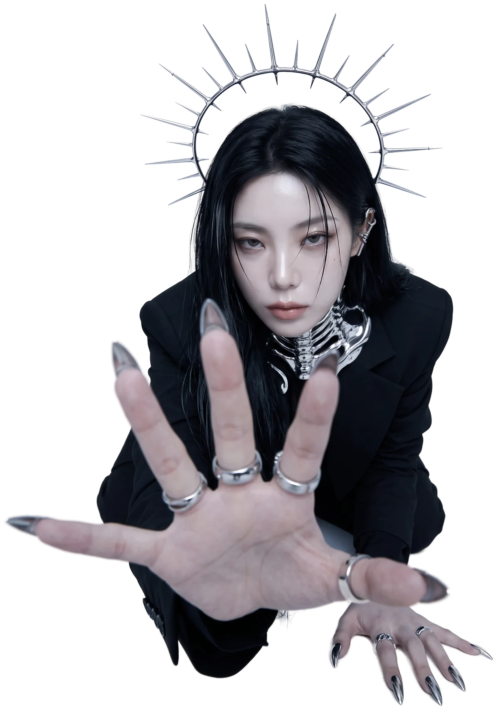
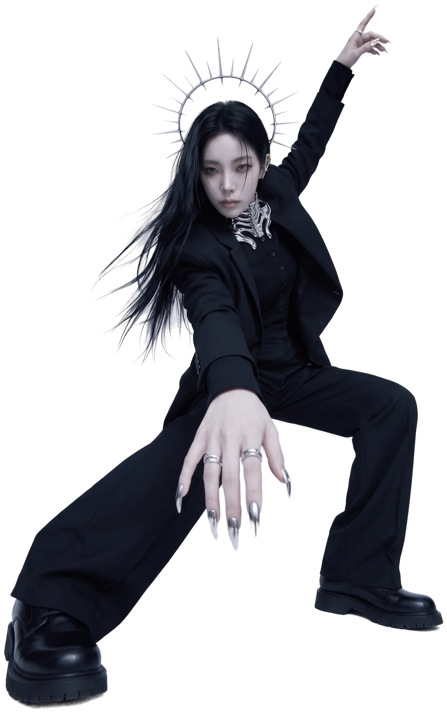

SPEC-000 · SUBJECT · LEE SANHEE



IRIS.L · LOCK C-SPINE MANUS.RLEE
SANHEEBrand & Visual Designer · Daejeon, KR

- ROLE01Brand & visual
designer. - SIGNATURE02Monochrome. Editorial.
Chrome. - METHOD03From first concept
to a live site. - STATUS04Open to roles
& collaboration. - TOOLS05Figma, Blender, AI.
Always disclosed. - BASE06Daejeon, Korea.
Remote-ready.
- alonewd0@gmail.com
- LinkedIn ↗ · Behance ↗
EXPERIENCE
- 2026.09—NOWFreelance Brand & Web Designer AURA SEOUL (self-employed) · remote
- 2026.06—08Expense Audit Assistant Daejeon Election Commission
- 2026.05—06Research Data Labeling Assistant LigaChem Biosciences
- 2025.09—26.02Office Support Duol
- 2023.12—24.01Client Reception Shinhan Bank PWM Center
- 2023.10—12Data Center Operations Support NAVER Data Center GAK Sejong
EDUCATION
- 2024 — 2025BBA · Edu-Up Lifelong Education Center (Academic Credit Bank)
- 2022 — 2024Emergency Medical Technology · Daejeon University (no degree)
- 2025SMAT Level 1
- LANGKorean native · English, Japanese conversational
SKILLS
Brand IdentityVisual SystemsBrand GuidelinesArt DirectionWeb DesignLanding PagesResponsive Layout
TOOLS
FigmaBlenderMidjourneyChatGPTClaudeGeminiVercelSupabase
AI tools are part of my workflow. Where images, video or code are AI-generated, each project says so. The portraits on this page are my own photo, restyled with AI; the iris at the end of the eye zoom is drawn in code.